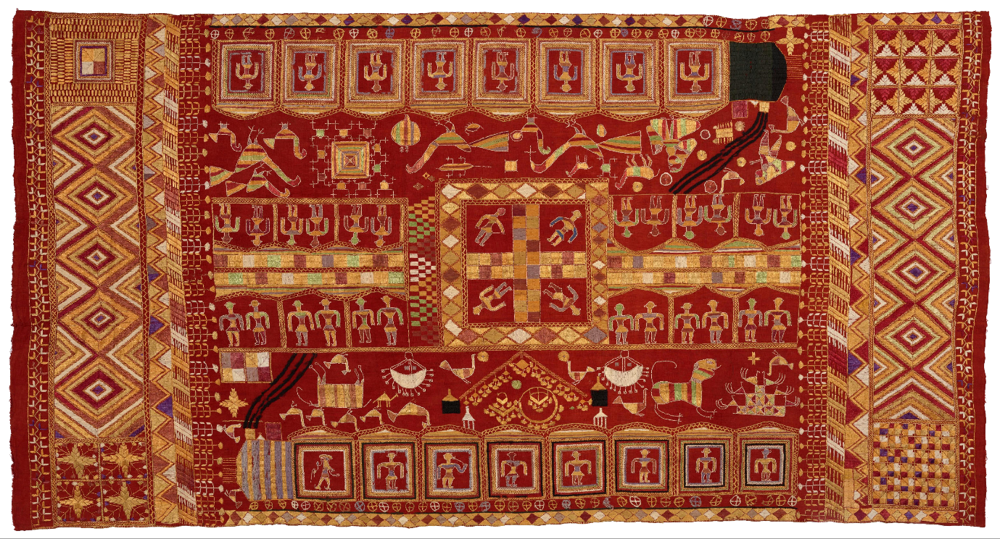

Phulkari,
pixel by pixel.
Pixelkari is a browser-based drawing tool inspired by the patterns of Phulkari, a traditional embroidery practice from Punjab. Create motifs, stamp patterns, explore old forms in new ways, and watch a new language emerge.
What is Pixelkari?
Pixelkari is a digital design tool that hopes to create a new entry point to an old craft. It is fuelled by my deep appreciation and love for the maternal figures in my family, my mumma and my nani, whose experienced hands stitched through life and wove its stories into cloth. My nani crochets, tats lace, knits and embroiders — hours given willingly to a single piece, each one passed down through the generations.
Countless women across the world carry visual cultures in this way, through weaving and textiles, holding the memory of a place and its people in thread. Between my nani's generation and mine, those hand skills have quietly thinned.
Punjabis are one of the world's great migrant communities, carried by partition, opportunity and necessity across every continent. Like many diasporic Punjabis, I never lived in Punjab. I grew up at a distance from the land and the communities who practised these traditions. But the longing to understand where I come from, to find it, to hold it somehow, never left.
Pixelkari is my way of reaching back: a designer's interpretation of a craft that was never written down, only passed from hand to hand. It is not a replacement but an invitation to touch something old in a way that feels possible now. To learn familiar motifs, and to ask what new ones might look like.
You build motifs, save them, stamp them, and watch something emerge. Like all things made by hand, it takes time and asks for patience. That is the point: to slow down, to count, to make something deliberately. The craft always worked that way. So does this.
What is Phulkari?
Phulkari (ਫੁਲਕਾਰੀ) is one of Punjab's oldest folk embroidery traditions — worked in vibrant silk thread on handspun cotton, built from geometric patterns of extraordinary precision and colour.
The name is believed to share its roots with the Persian gulkari, a popular form of embroidery in Iran. Phul and gul both mean flower, and kari means craft.
Passed down through generations, each piece was a personal document — a record of the maker's skill, her community, her season. A bride's dowry would include phulkaris her mother and grandmother had stitched for years in anticipation.
The patterns are built on a grid, with diagonal stitches counted across warp and weft. The geometry is strict; the colour is free. Motifs repeat across a field, borders frame the edges, and the whole becomes something larger than its parts. It is this grid that Pixelkari borrows.



Photos: Sheebamadanloewinger / CC BY-SA 4.0 / Wikimedia Commons · Sainchi Phulkari (VI), Philadelphia Museum of Art
Phulkari belongs to a Punjab that was once whole. Before 1947, the craft spread across undivided Punjab — from Peshawar and Rawalpindi in the northwest to Lahore, Amritsar, and as far south as Delhi. Phulkari districts clustered densely at the heart of Punjab, on both sides of what would become the partition line.
The craft depended on a living ecosystem. The silk floss thread, called pat, came from Kashmir, Bengal and Central Asia, was dyed locally, and was sold by nomadic merchants moving from village to village. The knowledge moved by hand and word, not by document.
1947 ended this. Communities fractured. Phulkaris were abandoned in the flight across new borders, and trade routes collapsed. The displacement of over 14 million people pulled women from rural areas into cities, and into survival.
Today, phulkari is both handmade and machine-made, widely available and widely worn. But the story it carries has thinned. The motifs are no longer a record of the maker's life, her community, her landscape. For much of the Punjabi diaspora, that connection was never passed down to begin with. What was once learned through proximity now has to be actively sought. Without that seeking, the knowledge quietly disappears. Pixelkari is one small way of seeking.
The Heritage Lab — theheritagelab.in/phulkari-punjab
Scroll.in — scroll.in — How the Partition almost killed Phulkari
This is an ode to nani, mumma, and all maternal figures who carry collective memory through traditional crafts. May we learn from them, and carry on the work.
Create your first Pixelkari.
Runs entirely in your browser. No account, no installation.
Please open on desktop to use the tool